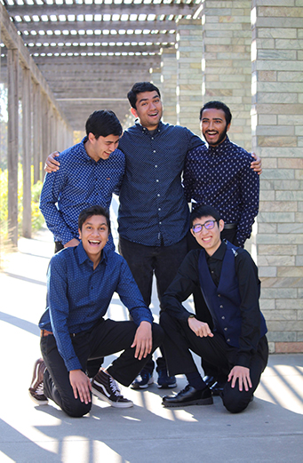

This image is a photo that I took while on a walk in San Francisco in 2018. I remember vividly it being "rush hour" time, hence the traffic on the long strip of road. This picture is interesting because it dislays the busyness of San Francisco. Everyone has a destination to go. I am curious where the people in the cars/bus ended up. I also wonder if the residents living in the buildings on the side get annoyed by the noise of traffic or if they find some sort of comfort in it.
This image relates to my vintage camera collection because I took this photo on one of them. For my Every Photo project, I am highlighting my camera collection and some of the photos I've taken on specific cameras.
This collection that I have of vintage cameras tells says that one of my hobbies is going to an antique/thrift stores and hunting for cameras. It also tells that I am into photography. I like to capture moments of my life, whether that is my family and friends or places I've been. I love getting my film developed and going through the hard copy results to see how the pictures turned out.

Sanjana Aithal
This image seems to be about a group of people who are very close, family or friend wise. They all have a bright and happy expression. The most interesting aspect of this image is that it feels like a candid image because it's not the typical everyone is looking at the camera and smiling photo. Every person in the image has a different form of expressing their happiness. Some are smiling with their mouth open, some are smiling with their teeth, and some are laughing looking the other way.
The most obvious aspects of this image is that they are dressed up and matching. They all are wearing a shade of blue button up with black pants. Thus, leading to the mysterious aspects of this image. What was the occassion? It seems like an important life event that they are going to, such as a dance or wedding. The background of the image maybe the location of the event, for it is outdoors, sunny, and their are pillars of brick and wood.Lastly, I wonder what they were laughing about. Did someone say something funny? Was it the person who took the photo?
10 Intriguing Photographs to Teach Close Reading and Visual Thinking Skills
by Michael Gonchar
In the article, “10 Intriguing Photographs to Teach Close Reading and Visual Thinking Skills” by Michael Gonchar, emphasizes the benefits of closely reading any text, whether written or visual. Paying careful attention to details, making connections, and asking questions rewards the viewer with a “big picture” understanding, expresses Gonchar. As a result of developing close reading and visual thinking skills, one can expand their knowledge of the world around them, start conversations, introduce new ideas, and experiment with other ways to look closely.
Garoa Skincare’s website uses images and interactions in interesting ways to inspire visual thinking. When the user scrolls either up or down, some of the images move or zoom in and out, which I find effective. The Garoa Skincare’s website also has some small images in-between text with a border-radius of 50%, to have the images displayed in a circle. I believe this approach is very unique and helps the user with visual thinking as the image can correlate to the text it is next to. Moreover, the website also has a slideshow of images and when the user scrolls down, it moves the slideshow to the right. Once the user reaches the end, the slideshow disappears, however if you scroll up, it brings the slideshow back and moves to the left. If the user hovers over the images as well, the cursor appears to be an ellipse with a single word that represents the photo. Overall, I believe this website implements novel interaction techniques that inspire and help the user with visual thinking.
Best Practices for Modals / Overlays / Dialog Windows
by Naema Baskanderi
Naema Baskanderi’s article, “Best Practices for Modals/Overlays/Dialog Windows”,
explains the definition of a modal, when one may consider using a modal, the
anatomy of a modal, and the benefits and downsides of utilizing them.
In short, a modal is an element that pops up and sits on top of an application’s
main window. Moreover, Baskanderi states that modals can be used to grab the user’s
attention, when some sort of user input is needed, and to show additional information
(in context and not in context). The anatomy of a modal is important, for poorly
implemented ones can hinder task completion. Modals must have some sort of escape
hatch, whether it is a cancel button, close button, escape key, or clicking outside
the window. Baskanderi also expresses that modals should have a descriptive title,
button labels inside modal should have actionable names, the size should be just right
(not too big or small), and darken the background of the parent window to enhance focus
on the modal. Additionally, modals should never surprise the user, for they should only
be triggered by the user. Another best practice is to avoid using modals in mobile devices,
for viewing the content is difficult.
Baskanderi concludes by going over the benefits and drawbacks of modals. The benefits include
grabbing the user’s attention, keeping context and simplifying the UI. The drawbacks are that
it interrupts the user flow and makes it impossible to interact with the parent page by hiding
the content behind the modal.
Best practices for form design
by Salim Ansari
In the article, “Best practices for form design”, Salim Ansari gives the reader twenty tips that
will increase form usability.
In short, Ansari’s article provides detailed information on the do’s and don'ts to form design. I
agree with all the practices
Ansari mentions, but the ones that stood out the most to me were to minimize the input fields,
auto-focus the first input field,
and accessibility.
Ansari, reminds the reader that “less is more”, and that is exactly why product designers should
follow minimizing the input fields,
such that the user only inputs the most relevant information in a form. As a computer science
student who is trying to hone their
front-end skills, I appreciate designing tips, such as auto-focusing the active input field of a
form by highlighting it using a bold
border or shadow so that users could know from a glace, where the focus is. Moreover, accessibility
is very important to remember while
designing, for all users should be able to enjoy what we create. For instance, we should not rely on
color so much to communicate a certain
status, but also have alternatives for color blind people.
Overall, I learned that it is important to make a form simple to understand, straightforward, and
easy to fill-in. As a result, following
these best practices will help significantly increase usability.
I interact a lot with Urban Outfitter's website form
for when I checkout. The form does appear to follow most of the best practices that Ansari mentions.
For instance, it asks the easy questions first, puts the label above the input field, sizes fields
accordingly, auto-focuses the active input field, and displays form feedback. However, it can
improve by removing the asterik (*) that represent required fields and instead put '(optional)' for
the optional fields.